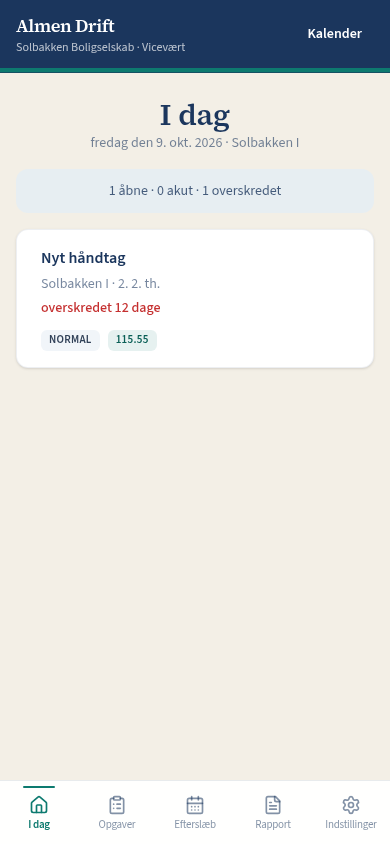

Fra mail og kalender til en liste, viceværten kan lukke med et foto.
De fleste sager starter i en mail. Derefter skal de lande hos viceværten, gerne med en dato, og nogen skal kunne se, om de er gjort. Almen Drift er det hul. Ikke et nyt administrationssystem.
- Dagens liste. Viceværten ser dagens opgaver på telefonen.
- Foto, når opgaven lukkes. Så kan man se, at den er gjort.
- Årshjul lagt ind én gang. Tag, legeplads og eftersyn ligger med dato, ikke kun i Outlook.

20 minutter, uden at I skal beslutte noget.
Det er det ikke
Ingen husleje. Intet MitID. Ingen beboerapp. Almen Drift er et driftslag oven på det, I allerede har.